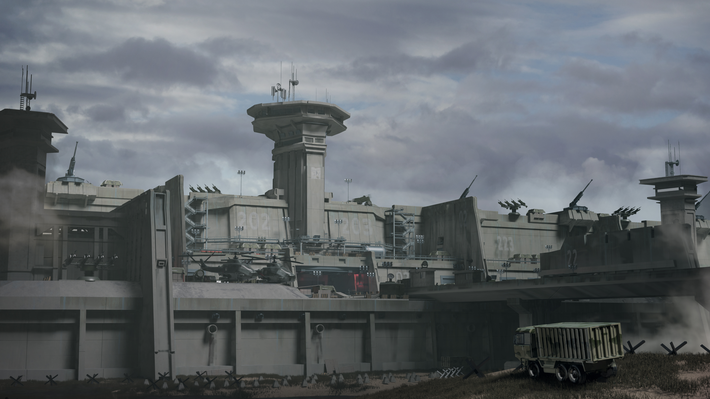
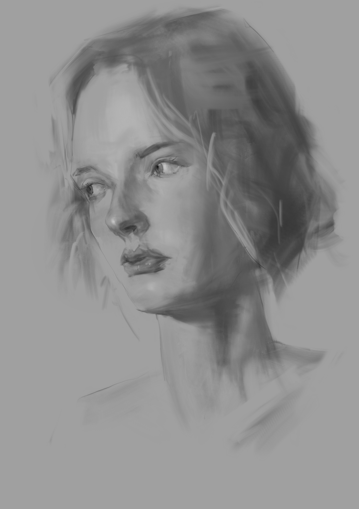
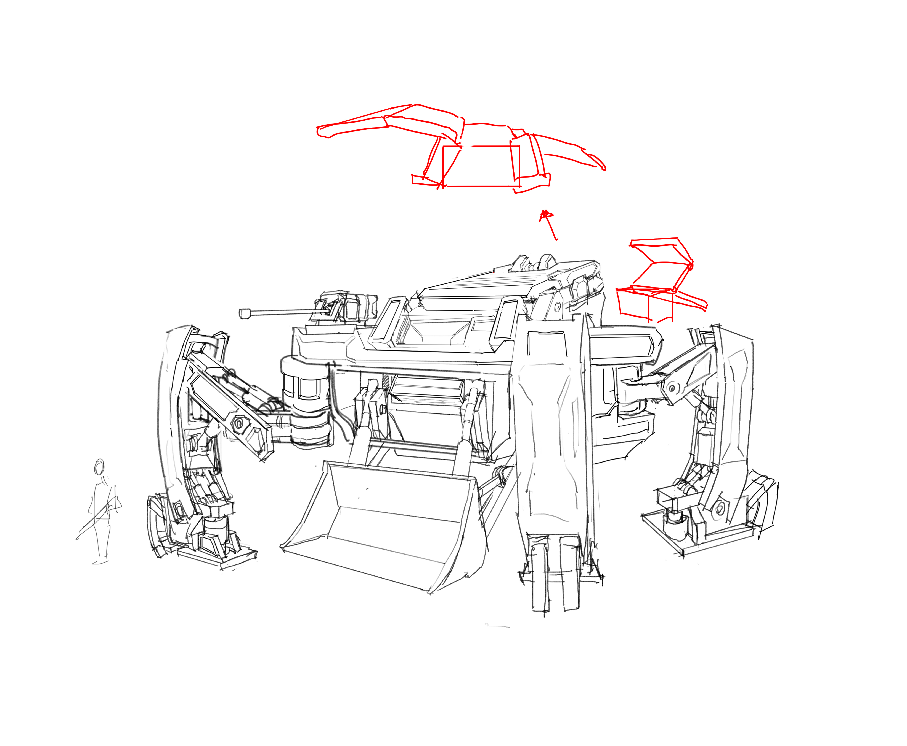
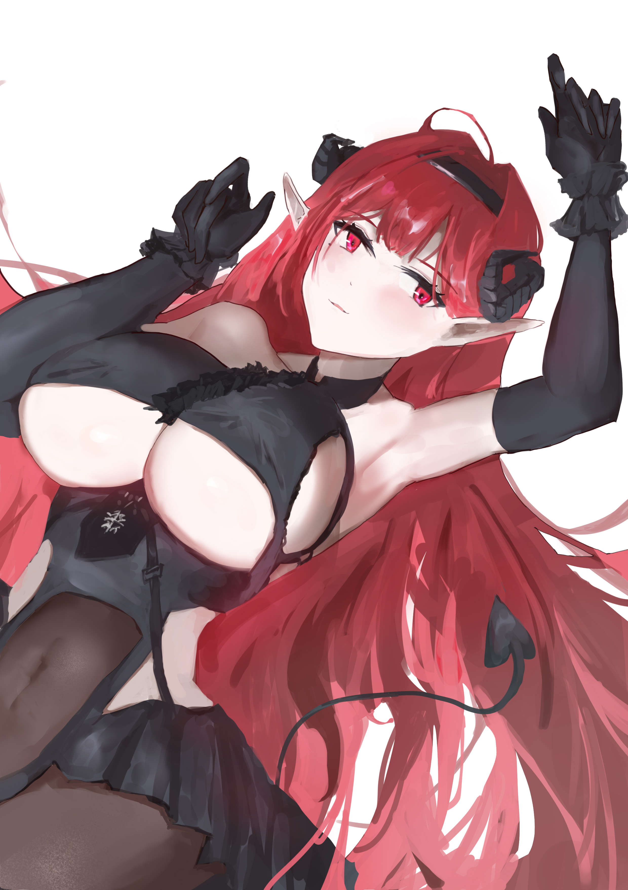
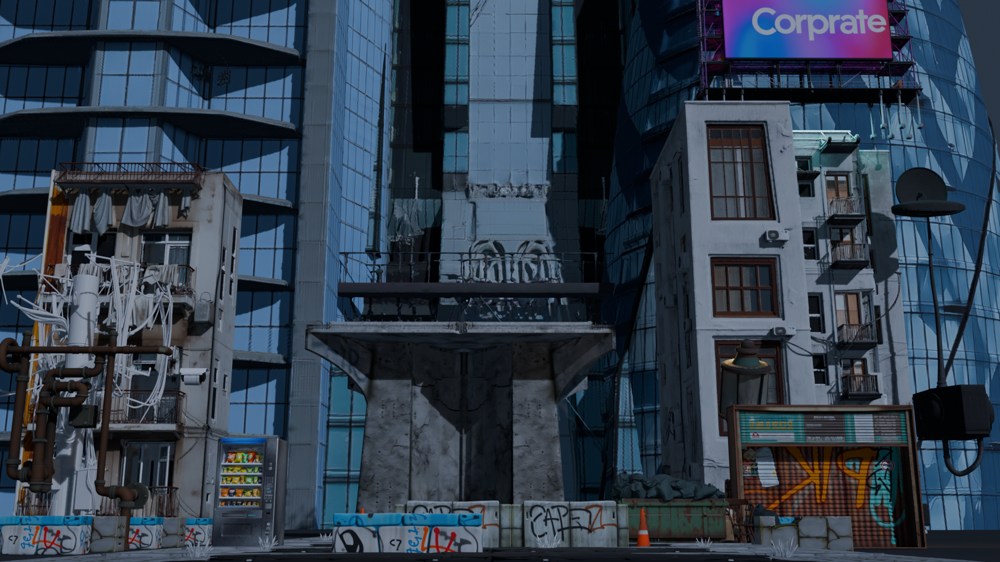

Open source · Python CLI
PretenDF
A small tool for normalizing PDF rotation metadata and page geometry. It fixes “fake landscape” files where the displayed page, its underlying coordinates, and annotations do not agree.
View on GitHubPortfolio / 2026
Software Engineer
I build tools and workflows for Unreal Engine and 3D production. I also make visual work, from drawing to concept art.
Selected work
Choose a section to see what I’ve been working on.
Engineering / Unreal Engine
I work on UE tools and the systems around them. One project is a custom asset migration workflow that maps dependencies, checks what can be copied, and moves assets in a reliable order.
View the UE migration caseAlso in Engineering
Infrastructure, debugging, and internal tools AI-assisted full-stack developmentVisual Art / Drawing & Concept
My visual work includes observational drawing, environment and mechanical concept art, and character illustration. This is where I explore shape, atmosphere, and composition.
View the art gallery
A few more pieces



3D Pipeline / Production Workflows
I’ve used Blender MCP with generated 3D assets to build and render a city scene, and worked with ComfyUI workflows for image and video production. I’m interested in making those steps easier to repeat and adapt.
View the production cases
Independent work
Open source · Python CLI
A small tool for normalizing PDF rotation metadata and page geometry. It fixes “fake landscape” files where the displayed page, its underlying coordinates, and annotations do not agree.
View on GitHub